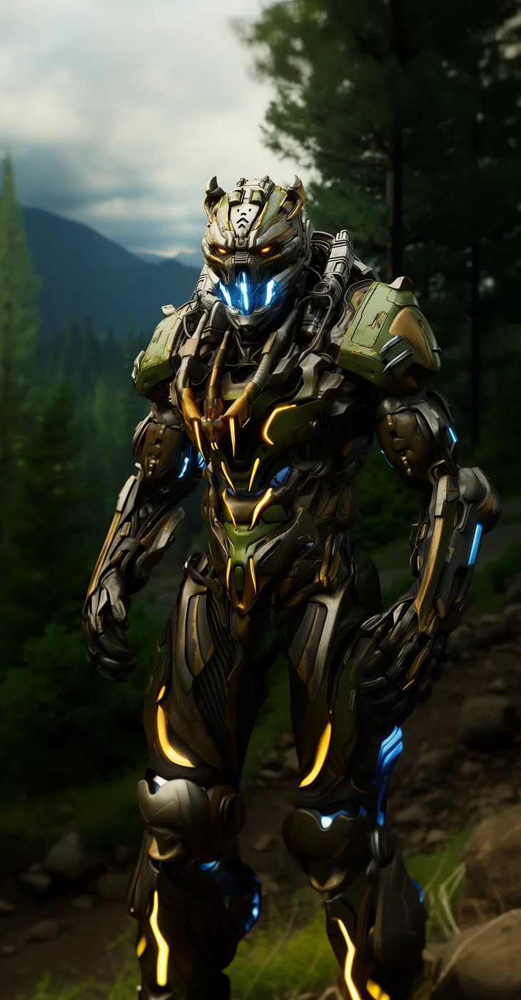

©
©
GENEZYS ARCHIVE · Earth 2 · Synthbot
Syktron
Toxin Fencer

Archive record
Syktron fences with venom instead of steel. The Septic Edge bites through armor and drains an enemy's energy before the wound is even felt. Every shell of the Horde grows from the same Spore, but Syktron grew the sharpest teeth.
Combat signature
Septic Edge
220 Cosmara
140 Animus
160 Vitalis
Bites fetid venom under armor: Reduces the target's Cosmara by 140 and deals 50 damage.
Genezys 10:02 ™&©2026LEGIONS
Return to LEGIONS